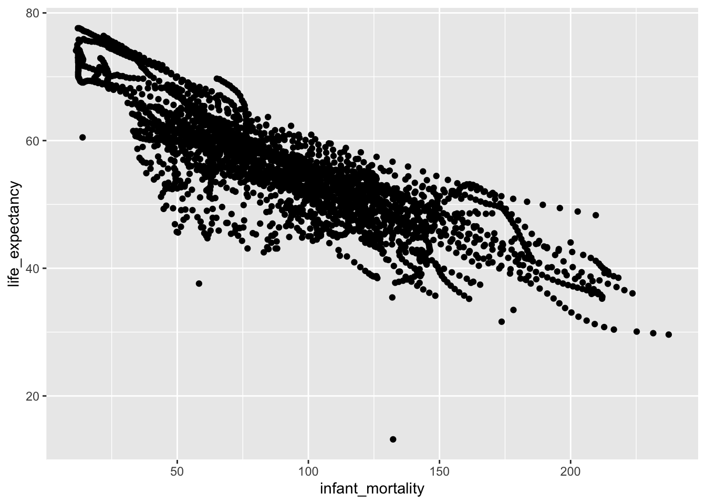
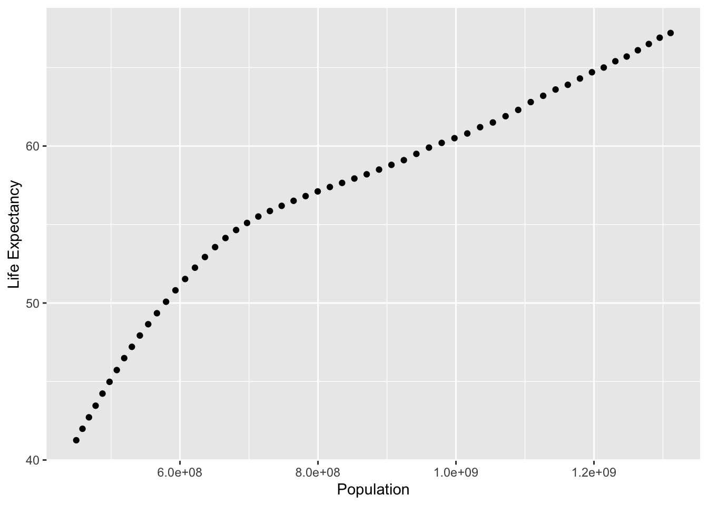

R coding Exercise
This will contain the future R coding exercise.
Loading packages and calling data
## ── Attaching packages ─────────────────────────────────────── tidyverse 1.3.1 ──## ✓ ggplot2 3.3.5 ✓ purrr 0.3.4
## ✓ tibble 3.1.4 ✓ dplyr 1.0.7
## ✓ tidyr 1.1.3 ✓ stringr 1.4.0
## ✓ readr 1.4.0 ✓ forcats 0.5.1## ── Conflicts ────────────────────────────────────────── tidyverse_conflicts() ──
## x dplyr::filter() masks stats::filter()
## x dplyr::lag() masks stats::lag()## 'data.frame': 10545 obs. of 9 variables:
## $ country : Factor w/ 185 levels "Albania","Algeria",..: 1 2 3 4 5 6 7 8 9 10 ...
## $ year : int 1960 1960 1960 1960 1960 1960 1960 1960 1960 1960 ...
## $ infant_mortality: num 115.4 148.2 208 NA 59.9 ...
## $ life_expectancy : num 62.9 47.5 36 63 65.4 ...
## $ fertility : num 6.19 7.65 7.32 4.43 3.11 4.55 4.82 3.45 2.7 5.57 ...
## $ population : num 1636054 11124892 5270844 54681 20619075 ...
## $ gdp : num NA 1.38e+10 NA NA 1.08e+11 ...
## $ continent : Factor w/ 5 levels "Africa","Americas",..: 4 1 1 2 2 3 2 5 4 3 ...
## $ region : Factor w/ 22 levels "Australia and New Zealand",..: 19 11 10 2 15 21 2 1 22 21 ...## country year infant_mortality life_expectancy
## Albania : 57 Min. :1960 Min. : 1.50 Min. :13.20
## Algeria : 57 1st Qu.:1974 1st Qu.: 16.00 1st Qu.:57.50
## Angola : 57 Median :1988 Median : 41.50 Median :67.54
## Antigua and Barbuda: 57 Mean :1988 Mean : 55.31 Mean :64.81
## Argentina : 57 3rd Qu.:2002 3rd Qu.: 85.10 3rd Qu.:73.00
## Armenia : 57 Max. :2016 Max. :276.90 Max. :83.90
## (Other) :10203 NA's :1453
## fertility population gdp continent
## Min. :0.840 Min. :3.124e+04 Min. :4.040e+07 Africa :2907
## 1st Qu.:2.200 1st Qu.:1.333e+06 1st Qu.:1.846e+09 Americas:2052
## Median :3.750 Median :5.009e+06 Median :7.794e+09 Asia :2679
## Mean :4.084 Mean :2.701e+07 Mean :1.480e+11 Europe :2223
## 3rd Qu.:6.000 3rd Qu.:1.523e+07 3rd Qu.:5.540e+10 Oceania : 684
## Max. :9.220 Max. :1.376e+09 Max. :1.174e+13
## NA's :187 NA's :185 NA's :2972
## region
## Western Asia :1026
## Eastern Africa : 912
## Western Africa : 912
## Caribbean : 741
## South America : 684
## Southern Europe: 684
## (Other) :5586## [1] "data.frame"Processing Data (Target Variable)
#Create a new object "africadata" in order to analyzed African countries
africadata <- gapminder %>% filter(continent=="Africa")
#Overview data structure
str(africadata)## 'data.frame': 2907 obs. of 9 variables:
## $ country : Factor w/ 185 levels "Albania","Algeria",..: 2 3 18 22 26 27 29 31 32 33 ...
## $ year : int 1960 1960 1960 1960 1960 1960 1960 1960 1960 1960 ...
## $ infant_mortality: num 148 208 187 116 161 ...
## $ life_expectancy : num 47.5 36 38.3 50.3 35.2 ...
## $ fertility : num 7.65 7.32 6.28 6.62 6.29 6.95 5.65 6.89 5.84 6.25 ...
## $ population : num 11124892 5270844 2431620 524029 4829291 ...
## $ gdp : num 1.38e+10 NA 6.22e+08 1.24e+08 5.97e+08 ...
## $ continent : Factor w/ 5 levels "Africa","Americas",..: 1 1 1 1 1 1 1 1 1 1 ...
## $ region : Factor w/ 22 levels "Australia and New Zealand",..: 11 10 20 17 20 5 10 20 10 10 ...## country year infant_mortality life_expectancy
## Algeria : 57 Min. :1960 Min. : 11.40 Min. :13.20
## Angola : 57 1st Qu.:1974 1st Qu.: 62.20 1st Qu.:48.23
## Benin : 57 Median :1988 Median : 93.40 Median :53.98
## Botswana : 57 Mean :1988 Mean : 95.12 Mean :54.38
## Burkina Faso: 57 3rd Qu.:2002 3rd Qu.:124.70 3rd Qu.:60.10
## Burundi : 57 Max. :2016 Max. :237.40 Max. :77.60
## (Other) :2565 NA's :226
## fertility population gdp continent
## Min. :1.500 Min. : 41538 Min. :4.659e+07 Africa :2907
## 1st Qu.:5.160 1st Qu.: 1605232 1st Qu.:8.373e+08 Americas: 0
## Median :6.160 Median : 5570982 Median :2.448e+09 Asia : 0
## Mean :5.851 Mean : 12235961 Mean :9.346e+09 Europe : 0
## 3rd Qu.:6.860 3rd Qu.: 13888152 3rd Qu.:6.552e+09 Oceania : 0
## Max. :8.450 Max. :182201962 Max. :1.935e+11
## NA's :51 NA's :51 NA's :637
## region
## Eastern Africa :912
## Western Africa :912
## Middle Africa :456
## Northern Africa :342
## Southern Africa :285
## Australia and New Zealand: 0
## (Other) : 0#Create new objects containing infant_mortality and life_expectancy
mortality_lifexp <- africadata %>% select(infant_mortality, life_expectancy)
#Create new objects containing population and life_expectancy
population_lifexp <- africadata %>% select(population , life_expectancy)
#Overview data structure
str(mortality_lifexp)## 'data.frame': 2907 obs. of 2 variables:
## $ infant_mortality: num 148 208 187 116 161 ...
## $ life_expectancy : num 47.5 36 38.3 50.3 35.2 ...## 'data.frame': 2907 obs. of 2 variables:
## $ population : num 11124892 5270844 2431620 524029 4829291 ...
## $ life_expectancy: num 47.5 36 38.3 50.3 35.2 ...## infant_mortality life_expectancy
## Min. : 11.40 Min. :13.20
## 1st Qu.: 62.20 1st Qu.:48.23
## Median : 93.40 Median :53.98
## Mean : 95.12 Mean :54.38
## 3rd Qu.:124.70 3rd Qu.:60.10
## Max. :237.40 Max. :77.60
## NA's :226## population life_expectancy
## Min. : 41538 Min. :13.20
## 1st Qu.: 1605232 1st Qu.:48.23
## Median : 5570982 Median :53.98
## Mean : 12235961 Mean :54.38
## 3rd Qu.: 13888152 3rd Qu.:60.10
## Max. :182201962 Max. :77.60
## NA's :51Visualization: Plot creation of the new objects/variables
#Plot life_expectacy vs Infant_mortality
ggplot(mortality_lifexp, aes(infant_mortality, life_expectancy)) + geom_point()## Warning: Removed 226 rows containing missing values (geom_point).
#This plot shows a negative correlation between infant mortality and life expectancy. 226 rows were removed due to missing values
#Plot Life_expectancy Vs Population(log scale)
ggplot(population_lifexp, aes(population, life_expectancy)) + geom_point() + scale_x_log10()## Warning: Removed 51 rows containing missing values (geom_point).
#This plot shows a positive correlation between Population and Life expectancy. According with africadata, the frame time when the data was collected was between 1960 to 2016, during this time population size and life expectacy got increse. This is the reason of the streaks. ** 51 rows were removed from the plot due to missing values.Cleaning Data
#Finding the year have missing data for infant mortality
africadata_na <- africadata %>% select(year, infant_mortality) %>% filter(is.na(infant_mortality))
africadata_na## year infant_mortality
## 1 1960 NA
## 2 1960 NA
## 3 1960 NA
## 4 1960 NA
## 5 1960 NA
## 6 1960 NA
## 7 1960 NA
## 8 1960 NA
## 9 1960 NA
## 10 1960 NA
## 11 1961 NA
## 12 1961 NA
## 13 1961 NA
## 14 1961 NA
## 15 1961 NA
## 16 1961 NA
## 17 1961 NA
## 18 1961 NA
## 19 1961 NA
## 20 1961 NA
## 21 1961 NA
## 22 1961 NA
## 23 1961 NA
## 24 1961 NA
## 25 1961 NA
## 26 1961 NA
## 27 1961 NA
## 28 1962 NA
## 29 1962 NA
## 30 1962 NA
## 31 1962 NA
## 32 1962 NA
## 33 1962 NA
## 34 1962 NA
## 35 1962 NA
## 36 1962 NA
## 37 1962 NA
## 38 1962 NA
## 39 1962 NA
## 40 1962 NA
## 41 1962 NA
## 42 1962 NA
## 43 1962 NA
## 44 1963 NA
## 45 1963 NA
## 46 1963 NA
## 47 1963 NA
## 48 1963 NA
## 49 1963 NA
## 50 1963 NA
## 51 1963 NA
## 52 1963 NA
## 53 1963 NA
## 54 1963 NA
## 55 1963 NA
## 56 1963 NA
## 57 1963 NA
## 58 1963 NA
## 59 1963 NA
## 60 1964 NA
## 61 1964 NA
## 62 1964 NA
## 63 1964 NA
## 64 1964 NA
## 65 1964 NA
## 66 1964 NA
## 67 1964 NA
## 68 1964 NA
## 69 1964 NA
## 70 1964 NA
## 71 1964 NA
## 72 1964 NA
## 73 1964 NA
## 74 1964 NA
## 75 1965 NA
## 76 1965 NA
## 77 1965 NA
## 78 1965 NA
## 79 1965 NA
## 80 1965 NA
## 81 1965 NA
## 82 1965 NA
## 83 1965 NA
## 84 1965 NA
## 85 1965 NA
## 86 1965 NA
## 87 1965 NA
## 88 1965 NA
## 89 1966 NA
## 90 1966 NA
## 91 1966 NA
## 92 1966 NA
## 93 1966 NA
## 94 1966 NA
## 95 1966 NA
## 96 1966 NA
## 97 1966 NA
## 98 1966 NA
## 99 1966 NA
## 100 1966 NA
## 101 1966 NA
## 102 1967 NA
## 103 1967 NA
## 104 1967 NA
## 105 1967 NA
## 106 1967 NA
## 107 1967 NA
## 108 1967 NA
## 109 1967 NA
## 110 1967 NA
## 111 1967 NA
## 112 1967 NA
## 113 1968 NA
## 114 1968 NA
## 115 1968 NA
## 116 1968 NA
## 117 1968 NA
## 118 1968 NA
## 119 1968 NA
## 120 1968 NA
## 121 1968 NA
## 122 1968 NA
## 123 1968 NA
## 124 1969 NA
## 125 1969 NA
## 126 1969 NA
## 127 1969 NA
## 128 1969 NA
## 129 1969 NA
## 130 1969 NA
## 131 1970 NA
## 132 1970 NA
## 133 1970 NA
## 134 1970 NA
## 135 1970 NA
## 136 1971 NA
## 137 1971 NA
## 138 1971 NA
## 139 1971 NA
## 140 1971 NA
## 141 1971 NA
## 142 1972 NA
## 143 1972 NA
## 144 1972 NA
## 145 1972 NA
## 146 1972 NA
## 147 1972 NA
## 148 1973 NA
## 149 1973 NA
## 150 1973 NA
## 151 1973 NA
## 152 1973 NA
## 153 1973 NA
## 154 1974 NA
## 155 1974 NA
## 156 1974 NA
## 157 1974 NA
## 158 1974 NA
## 159 1975 NA
## 160 1975 NA
## 161 1975 NA
## 162 1975 NA
## 163 1975 NA
## 164 1976 NA
## 165 1976 NA
## 166 1976 NA
## 167 1977 NA
## 168 1977 NA
## 169 1977 NA
## 170 1978 NA
## 171 1978 NA
## 172 1979 NA
## 173 1979 NA
## 174 1980 NA
## 175 1981 NA
## 176 2016 NA
## 177 2016 NA
## 178 2016 NA
## 179 2016 NA
## 180 2016 NA
## 181 2016 NA
## 182 2016 NA
## 183 2016 NA
## 184 2016 NA
## 185 2016 NA
## 186 2016 NA
## 187 2016 NA
## 188 2016 NA
## 189 2016 NA
## 190 2016 NA
## 191 2016 NA
## 192 2016 NA
## 193 2016 NA
## 194 2016 NA
## 195 2016 NA
## 196 2016 NA
## 197 2016 NA
## 198 2016 NA
## 199 2016 NA
## 200 2016 NA
## 201 2016 NA
## 202 2016 NA
## 203 2016 NA
## 204 2016 NA
## 205 2016 NA
## 206 2016 NA
## 207 2016 NA
## 208 2016 NA
## 209 2016 NA
## 210 2016 NA
## 211 2016 NA
## 212 2016 NA
## 213 2016 NA
## 214 2016 NA
## 215 2016 NA
## 216 2016 NA
## 217 2016 NA
## 218 2016 NA
## 219 2016 NA
## 220 2016 NA
## 221 2016 NA
## 222 2016 NA
## 223 2016 NA
## 224 2016 NA
## 225 2016 NA
## 226 2016 NA#1960 - 1981 and 2016 have missing data.
#To avoid missing data a new variable will be created only with data from year 2000
africadata_2000 <- africadata %>% filter(year==2000)
#Overview data structure
str(africadata_2000)## 'data.frame': 51 obs. of 9 variables:
## $ country : Factor w/ 185 levels "Albania","Algeria",..: 2 3 18 22 26 27 29 31 32 33 ...
## $ year : int 2000 2000 2000 2000 2000 2000 2000 2000 2000 2000 ...
## $ infant_mortality: num 33.9 128.3 89.3 52.4 96.2 ...
## $ life_expectancy : num 73.3 52.3 57.2 47.6 52.6 46.7 54.3 68.4 45.3 51.5 ...
## $ fertility : num 2.51 6.84 5.98 3.41 6.59 7.06 5.62 3.7 5.45 7.35 ...
## $ population : num 31183658 15058638 6949366 1736579 11607944 ...
## $ gdp : num 5.48e+10 9.13e+09 2.25e+09 5.63e+09 2.61e+09 ...
## $ continent : Factor w/ 5 levels "Africa","Americas",..: 1 1 1 1 1 1 1 1 1 1 ...
## $ region : Factor w/ 22 levels "Australia and New Zealand",..: 11 10 20 17 20 5 10 20 10 10 ...## country year infant_mortality life_expectancy
## Algeria : 1 Min. :2000 Min. : 12.30 Min. :37.60
## Angola : 1 1st Qu.:2000 1st Qu.: 60.80 1st Qu.:51.75
## Benin : 1 Median :2000 Median : 80.30 Median :54.30
## Botswana : 1 Mean :2000 Mean : 78.93 Mean :56.36
## Burkina Faso: 1 3rd Qu.:2000 3rd Qu.:103.30 3rd Qu.:60.00
## Burundi : 1 Max. :2000 Max. :143.30 Max. :75.00
## (Other) :45
## fertility population gdp continent
## Min. :1.990 Min. : 81154 Min. :2.019e+08 Africa :51
## 1st Qu.:4.150 1st Qu.: 2304687 1st Qu.:1.274e+09 Americas: 0
## Median :5.550 Median : 8799165 Median :3.238e+09 Asia : 0
## Mean :5.156 Mean : 15659800 Mean :1.155e+10 Europe : 0
## 3rd Qu.:5.960 3rd Qu.: 17391242 3rd Qu.:8.654e+09 Oceania : 0
## Max. :7.730 Max. :122876723 Max. :1.329e+11
##
## region
## Eastern Africa :16
## Western Africa :16
## Middle Africa : 8
## Northern Africa : 6
## Southern Africa : 5
## Australia and New Zealand: 0
## (Other) : 0Visualization: Plotting clean data
#Plots using only data from year 2000
#Plots will be showed the variable correlation for year 2000
#Plot life expectancy vs infant mortality
ggplot(africadata_2000, aes(infant_mortality, life_expectancy)) + geom_point()Fitting linear regression
#We will use lm function for fit a lineal model with infant mortality as a predictor
fit1<- lm(life_expectancy ~ infant_mortality, data=africadata_2000)
#We will use lm function for fit a lineal model with population as a predictor
fit2<- lm(life_expectancy ~ population, data=africadata_2000)
#Get the summary
summary(fit1)##
## Call:
## lm(formula = life_expectancy ~ infant_mortality, data = africadata_2000)
##
## Residuals:
## Min 1Q Median 3Q Max
## -22.6651 -3.7087 0.9914 4.0408 8.6817
##
## Coefficients:
## Estimate Std. Error t value Pr(>|t|)
## (Intercept) 71.29331 2.42611 29.386 < 2e-16 ***
## infant_mortality -0.18916 0.02869 -6.594 2.83e-08 ***
## ---
## Signif. codes: 0 '***' 0.001 '**' 0.01 '*' 0.05 '.' 0.1 ' ' 1
##
## Residual standard error: 6.221 on 49 degrees of freedom
## Multiple R-squared: 0.4701, Adjusted R-squared: 0.4593
## F-statistic: 43.48 on 1 and 49 DF, p-value: 2.826e-08##
## Call:
## lm(formula = life_expectancy ~ population, data = africadata_2000)
##
## Residuals:
## Min 1Q Median 3Q Max
## -18.429 -4.602 -2.568 3.800 18.802
##
## Coefficients:
## Estimate Std. Error t value Pr(>|t|)
## (Intercept) 5.593e+01 1.468e+00 38.097 <2e-16 ***
## population 2.756e-08 5.459e-08 0.505 0.616
## ---
## Signif. codes: 0 '***' 0.001 '**' 0.01 '*' 0.05 '.' 0.1 ' ' 1
##
## Residual standard error: 8.524 on 49 degrees of freedom
## Multiple R-squared: 0.005176, Adjusted R-squared: -0.01513
## F-statistic: 0.2549 on 1 and 49 DF, p-value: 0.6159#Based on the outcomes of the two models and using their p-values, we can conclude that the infant mortality as a predictor (p-value<0.05) shows a significant correlation with life expectancy. The model with population as a predictor has a p-value>0.05, suggesting that is not a good predictor of life expectancy.Part 2 - Data Manipulation
Here we are going to look at population and GDP in India to see if they are good indicators of life expectancy.
library(broom)
#This filters the data so it only holds data from India
Indiadata <- filter(gapminder, country=="India")Next we create two data frames containing the variables we are looking at.
IndiaPOPLE <- select(Indiadata, population, life_expectancy)
IndiaGDPLE <- select(Indiadata, gdp, life_expectancy)
summary(IndiaPOPLE)## population life_expectancy
## Min. :4.497e+08 Min. :41.26
## 1st Qu.:6.039e+08 1st Qu.:51.53
## Median :8.261e+08 Median :57.65
## Mean :8.453e+08 Mean :56.58
## 3rd Qu.:1.076e+09 3rd Qu.:62.30
## Max. :1.311e+09 Max. :67.50
## NA's :1## gdp life_expectancy
## Min. :8.104e+10 Min. :41.26
## 1st Qu.:1.242e+11 1st Qu.:51.53
## Median :2.120e+11 Median :57.65
## Mean :3.155e+11 Mean :56.58
## 3rd Qu.:4.298e+11 3rd Qu.:62.30
## Max. :1.040e+12 Max. :67.50
## NA's :5Part 2 - Plotting
ggplot(IndiaPOPLE, aes(x = population, y = life_expectancy)) +
geom_point() +
xlab("Population") +
ylab("Life Expectancy")## Warning: Removed 1 rows containing missing values (geom_point).
ggplot(IndiaGDPLE, aes(x = gdp, y = life_expectancy)) +
geom_point() +
xlab("GDP") +
ylab("Life Expectancy")## Warning: Removed 5 rows containing missing values (geom_point).Both of these have positive associations, the first graph with population and life expectancy in particular has a more stable increase over time, whereas the GDP graph has a more exponential increase.
Part 2 - Linear Models
#These create the linear models with life expectancy as the outcome variable and population/gdp as the predictor
fit3 <- lm(population ~ life_expectancy, IndiaPOPLE)
fit4 <- lm(gdp ~ life_expectancy, IndiaGDPLE)
summary(fit3)##
## Call:
## lm(formula = population ~ life_expectancy, data = IndiaPOPLE)
##
## Residuals:
## Min 1Q Median 3Q Max
## -101866846 -57587094 2456008 51590062 146640137
##
## Coefficients:
## Estimate Std. Error t value Pr(>|t|)
## (Intercept) -1.176e+09 7.078e+07 -16.61 <2e-16 ***
## life_expectancy 3.584e+07 1.245e+06 28.79 <2e-16 ***
## ---
## Signif. codes: 0 '***' 0.001 '**' 0.01 '*' 0.05 '.' 0.1 ' ' 1
##
## Residual standard error: 6.7e+07 on 54 degrees of freedom
## (1 observation deleted due to missingness)
## Multiple R-squared: 0.9388, Adjusted R-squared: 0.9377
## F-statistic: 828.6 on 1 and 54 DF, p-value: < 2.2e-16##
## Call:
## lm(formula = gdp ~ life_expectancy, data = IndiaGDPLE)
##
## Residuals:
## Min 1Q Median 3Q Max
## -1.469e+11 -1.179e+11 -3.708e+10 8.482e+10 4.181e+11
##
## Coefficients:
## Estimate Std. Error t value Pr(>|t|)
## (Intercept) -1.371e+12 1.631e+11 -8.405 3.96e-11 ***
## life_expectancy 3.033e+10 2.912e+09 10.417 3.99e-14 ***
## ---
## Signif. codes: 0 '***' 0.001 '**' 0.01 '*' 0.05 '.' 0.1 ' ' 1
##
## Residual standard error: 1.438e+11 on 50 degrees of freedom
## (5 observations deleted due to missingness)
## Multiple R-squared: 0.6846, Adjusted R-squared: 0.6783
## F-statistic: 108.5 on 1 and 50 DF, p-value: 3.993e-14Both have p-values<0.05, so they are both statistically significant predictors of life expectancy.
## # A tibble: 2 × 5
## term estimate std.error statistic p.value
## <chr> <dbl> <dbl> <dbl> <dbl>
## 1 (Intercept) -1175883500. 70781322. -16.6 7.02e-23
## 2 life_expectancy 35843559. 1245180. 28.8 1.93e-34## # A tibble: 2 × 5
## term estimate std.error statistic p.value
## <chr> <dbl> <dbl> <dbl> <dbl>
## 1 (Intercept) -1.37e12 163097807766. -8.40 3.96e-11
## 2 life_expectancy 3.03e10 2911602899. 10.4 3.99e-14